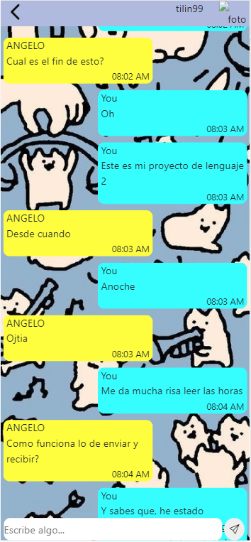

Tecnologias
ClosedBox Integra un conjunto de teconlogias que permiten la transmicion y recepcion de mensajes de texto en tiempo real a 0 costo
ClosedBox cuenta con una lista de usuarios disponibles para iniciar un chat con ellos, en caso de haber conversado previamente su conversacion se restaura al ultimo punto.
Aunque el proyecto tuvo que haberse limitado al diseno de frontend, ClosedBox termino unificando los lenguajes de frontend clasicos (html, css, js) y frameworks como bootstrap en combinacion con lenguajes de backend como php, sql y ajax para hacer solicitudes al servidor
冷たい涙が空で凍てついてやさしい振りして舞い落ちる頃に離れた誰かと誰かがいたことただそれだけのはなし (笑) 冬の話っていう曲だった。